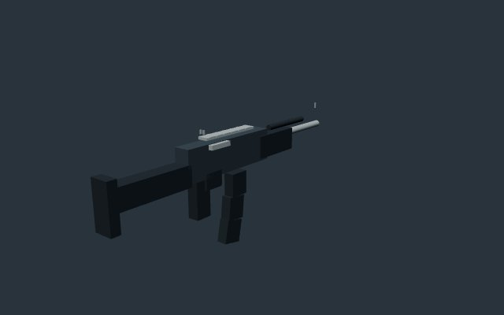
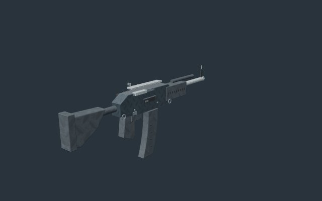
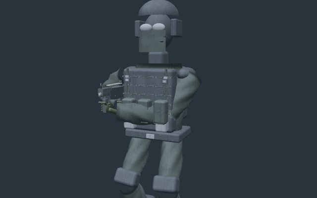
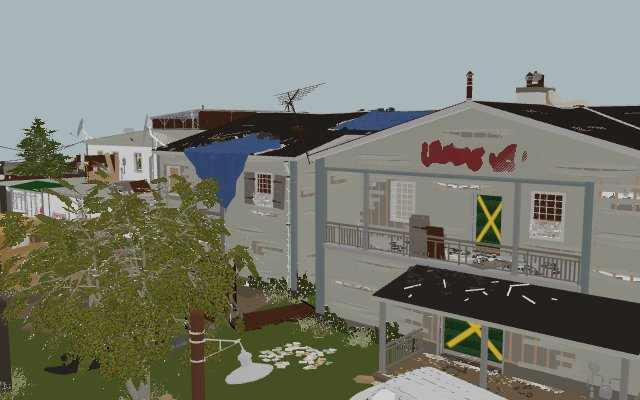
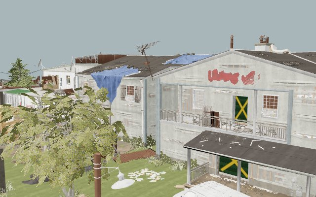

Original models, photographic material detail and pooled effects. These captures use matching cameras and lighting. High is the new default; Low remains available.
Play Breach Protocol Verification, references and remaining limits





This is an original browser reconstruction, not a claim of exact Siege or AAA visual parity.